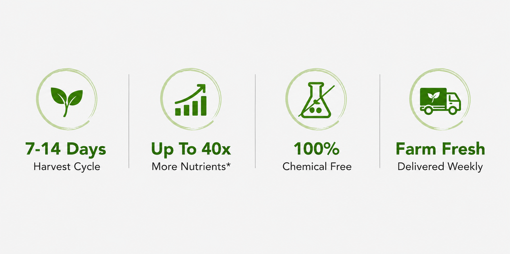
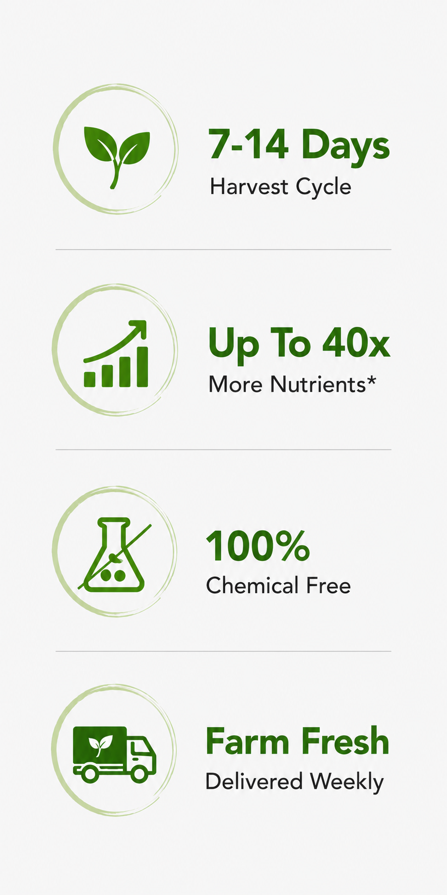
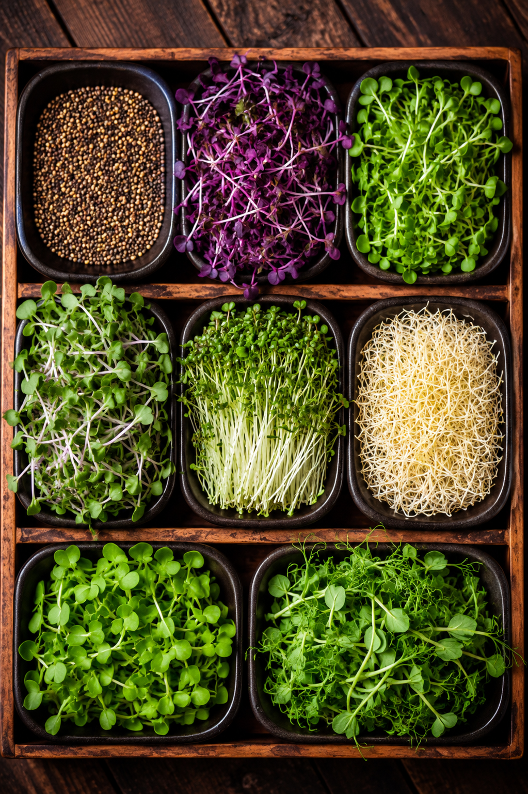
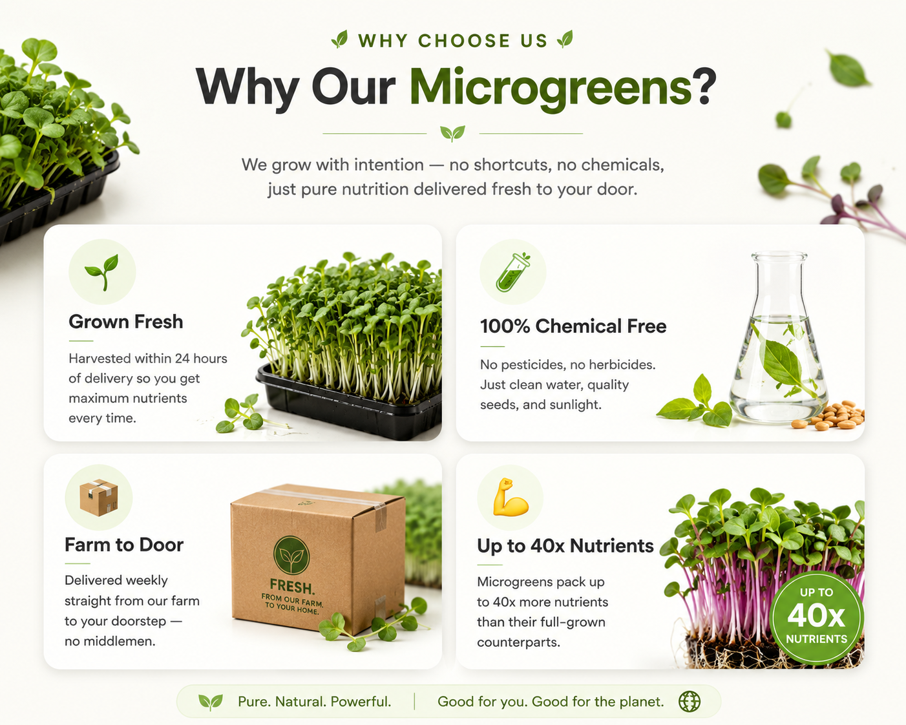
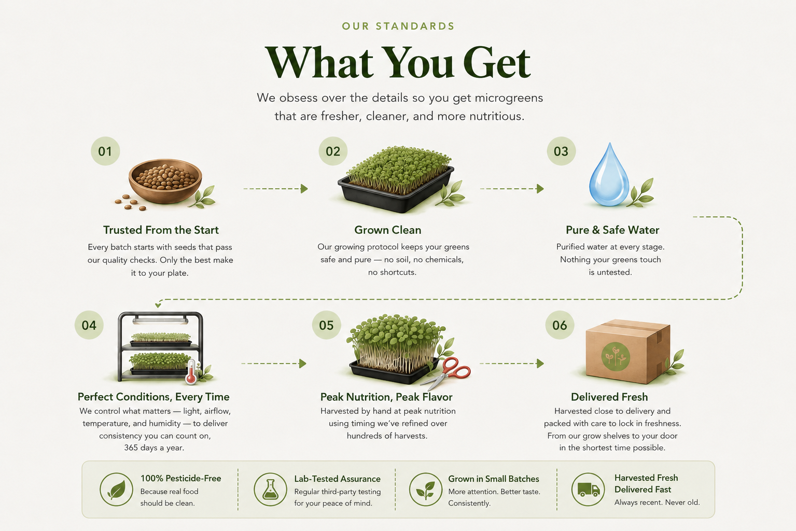
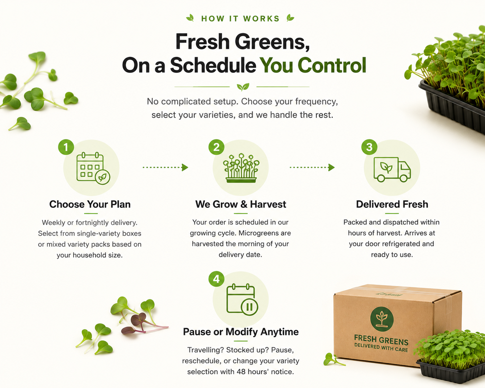
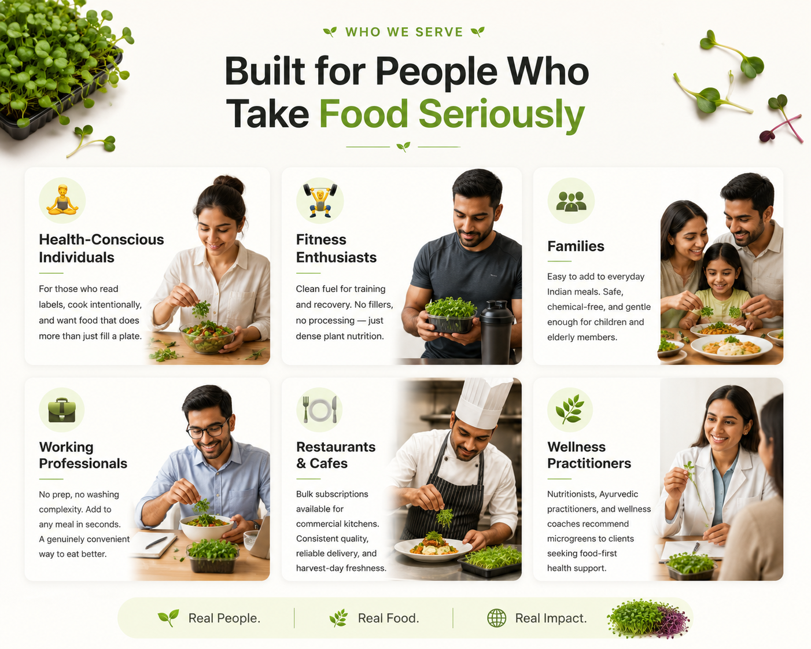

Fresh, nutrient-dense microgreens grown with care
and delivered at peak freshness.



WHY MICROGREENS?
1. Nutrient-dense greens harvested young
2. Rich in vitamins, minerals & antioxidants
3. Easy to consume with everyday meals
4. Supports daily wellness & energy

OUR VARIETIES
Each variety is grown in a dedicated batch, harvested at peak flavour, and packed the same day.
Taste: Nutty, mild, slightly sweet
One of the most satisfying microgreens — thick stems with a satisfying crunch. Rich in Vitamin E, selenium, and healthy fats.
Taste: Peppery, sharp, clean finish
High in folate and Vitamin C. A punchy addition that elevates any dish with colour and character.
Taste: Sweet, fresh, garden-like
Delicate and versatile. High in Vitamins A, C, and folate. A gentle flavour that works well with almost any meal.
Taste: Mild, earthy, clean
Among the most studied microgreens for sulforaphane content. An effortless way to add nutrition to smoothies and bowls.
Taste: Earthy, grassy, intense
Traditionally consumed as a shot or in juices. Contains chlorophyll, iron, and enzymes that support digestion and energy.
Taste: Slightly bitter, aromatic
A familiar flavour in Indian cooking. Supports blood sugar balance and digestion. Pairs naturally with traditional meals.

NUTRITIONAL VALUE
A single daily serving of microgreens provides meaningful amounts of vitamins and minerals — without changing your diet.
Supports immunity, skin health, and bone density — essential for everyday wellbeing.
Helps neutralise free radicals — relevant for anyone managing stress, pollution, or irregular sleep.
Live enzymes and dietary fibre assist digestion and nutrient absorption at the cellular level.
Plant-based protein and amino acids support muscle recovery and sustained energy for active individuals.
*Based on published studies comparing microgreen nutrient density to mature vegetable counterparts. Results vary by variety.

SUBSCRIPTION PLANS
Fresh microgreens delivered every Sunday. Save up to 48% with longer plans — pause anytime Mon–Fri when you travel.
SINGLE · 1 PERSON
2 varieties on rotation · 100g per delivery
Delivered every Sunday
COUPLE · 2 PEOPLE
2 varieties · 200g per delivery
Delivered every Sunday
FAMILY · 4 PEOPLE
3 varieties · 400g per delivery
Delivered every Sunday
All plans include free Sunday home delivery. Skip or pause anytime Mon–Fri before Friday midnight — paused deliveries are saved, not lost.

CUSTOMER STORIES
Real feedback from people who order regularly — no curated superlatives.
"I've been receiving the weekly box for about three months. The sunflower microgreens are consistently fresh and the packaging is solid. I add them to my lunch every day — it's become a habit I don't want to break."
"We source microgreens from The Tray for our cafe menu. The harvest-day freshness is noticeable — guests comment on it. Delivery has been reliable every week without us needing to follow up."
"My nutritionist suggested I add microgreens to my diet after my iron levels were low. I tried a few brands and settled on The Tray because the broccoli variety stays fresh longest and the quantity is honest."
"Ordered the family box for the first time and was surprised by how simple it was to use. My daughter eats pea shoots without any fuss. The radish variety is now a regular in our sabzi and wraps."
When stored correctly in the refrigerator, our microgreens last 5–7 days from the delivery date. Because they are harvested the morning of delivery, you receive them at their freshest point.
Keep the sealed container in your refrigerator's vegetable drawer. Do not wash them until just before use — moisture accelerates wilting. Once opened, consume within 3–4 days.
We currently deliver on Tuesdays and Fridays across our service areas. Your delivery day is fixed at the time of subscription, based on your location and plan.
Yes. You can pause, reschedule, or cancel your subscription with 48 hours' notice before your next delivery date. There are no cancellation fees or lock-in periods.
Yes. Our microgreens are grown without pesticides or chemical treatments and use RO-purified water. They are safe for all age groups. We recommend rinsing lightly before serving to young children.
Add them raw on top of dal, rice, or roti just before eating. They can also go into salads, raitas, smoothies, or on the side of any meal as a fresh component. Cooking is not recommended as heat reduces nutrient content.
Yes. We have a commercial supply arrangement for restaurants, cafes, and wellness centres. Contact us directly at hello@thetraymicrogreens.in to discuss quantity, frequency, and pricing.
READY TO START?
Join 200+ households receiving fresh microgreens every week. No commitment required on your first order.
✓ Harvested same day · ✓ Chemical-free · ✓ Cancel anytime